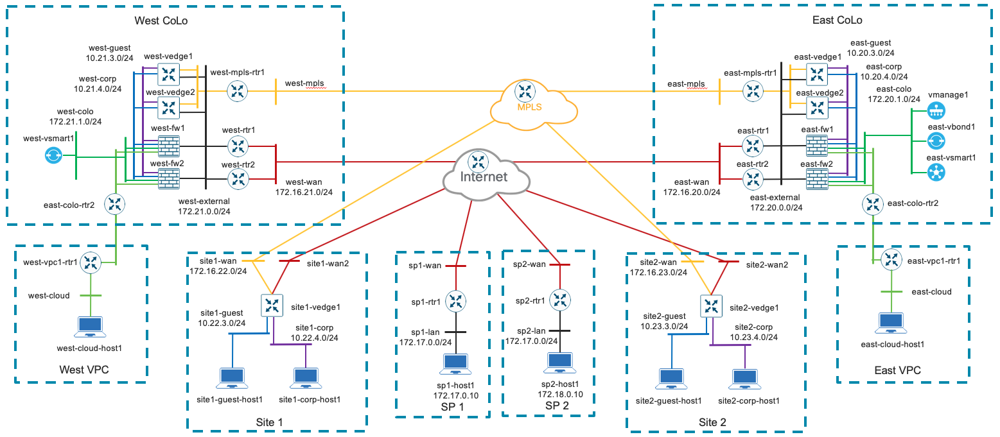

Public Sector Cloud Ready Network
DevOps Bundle
What is a DevOps Bundle
- Architecture - Detailed architecture with customer-focused use cases
- Simulation - Dynamic VIRL topology in which to simulate architecture
- Automation - Automation tooling to deploy and operate in simulated and production environments
- Testing - Test tooling to verify deployment for CI/CD pipelines
- Cisco DevNet - Learning Labs and Sandboxes to teach and experience the components of the DevOps Bundle
Background
Overview
Colocation Center Domain
- Cross connection services simplify the interconnection to transport and public clouds
- Establish a “cloud edge” demarcation point for security and visibility for agency
- Reduces “hair-pinning” and latency while improving application performance to cloud services
- Based on TIC 2.0 design recommendations
SD-WAN Domain
- Segmentation
- Service Chaining
- End-to-End Encryption
- Application Aware Routing
- High-Availability
- Transport independence
- Analytics
Architecture
Objectives
- Enterprise-wide, Highly-Available SDWAN Overlay
- Secure, Multi-tenant Overlay Network
- Flexibly architectures, Transport Independent
- Anchored in Colocation Centers
- High bandwidth, low latency access to cloud regions
- Coast effectice geographic redundancy
- Provides a Secure Cloud Edge
- Full security stack
- Compliant with TIC Requirements
Fabric Overview
SD-WAN Features
SEGMENTATION – Topology-driven network-wide segmentation
SERVICE CHAINING – Insertion of security services into the traffic flow Firewalls, IDS, as well as third-party solutions
END-to-END ENCRYPTION - Secure, zero-trust, authenticated transport Extend the SD-WAN encrypted fabric to branches and into the public cloud
APPLICATION AWARE ROUTING - Intelligent traffic steering based on awareness of the application’s locations (on-premise, public cloud, or SaaS) and SLA requirements
HIGH AVAILABLITY - East/West COLO presence for geographic load-balancing and redundancy
TRANSPORT INDEPENDANCEMajor cost reduction relating to WAN, including circuit cost, operational expenditure, and the ability to leverage lower-cost bandwidth services, through transport optimization.
ANALYTICS – Advanced analytics for both real-time insight to the WAN fabric’s behavior, as well as future-looking “what-if” analysis for billing, capacity planning, all cloud managed
Colo Node
- Internet Routers peer with Service Providers and other Peers
- Cloud Exchange Routers connect to AWS, Azure, GCE, etc. through the COLO
- MPLS Router provides path diversity over private network
- Tenant vEdges terminate the SD-WAN multi-tenant fabric
- Inter-Tenant Firewalls enforce policy outside<->tenant and tenant<->tenant
- Optional COLO Routers route traffic within Shared Services node
Colo Security Stack
- Security Visability:
- Stealthwatch
- Automated Threat Intellience Protection
- Firepower - IDS/IPS
- AMP - End Point Security
- Security Services
- DUO
- Umbrella
COLO Tenant Traffic Flow
- Multi-Tenant Fabric
- Intra-Tenant traffic stays within SD-WAN Fabric
- MPLS Router provides path diversity over private network
- Inter-Tenant traffic passes through Firewall for policy enforcement
COLO Routing Protocols
- Each Tenant is in its own OSPF NSSA Area
- OSPF Area 0 between the Firewalls and the Internet Router
- BGP to the Service Providers
COLO High Availability
- Internet Routers:
- Redundant BGP Peerings
- Receive default from upstream and redistribute into OSPF
- vEdge Transport Interfaces/ Firewall Outside Interfaces
- Peer with Internet routers via OSPF in area 0, receive default route
- vEdge Service Interfaces/ Firewall Tenant Interfaces
- Each Tenant VPN and Firewall on different VLAN tag
- Each vEdge Service interface, Firewall interfaces, and potentially COLO router VRF peer in separate OSPF area
Physical Stack
- Cat 9K ToR Aggregation
- CSPs provide VNF support and automation
- PNF for line-rate routing, policy enforcement, and inspection
- HyperFlex provides converged computing for Shared Services
Simulation
VIRL Topology
Dynamically Generated
Data-Driven Configuration
Automation
Ansible Viptela
Ansible pyATS
Ansible VIRL
Testing
Learning Labs